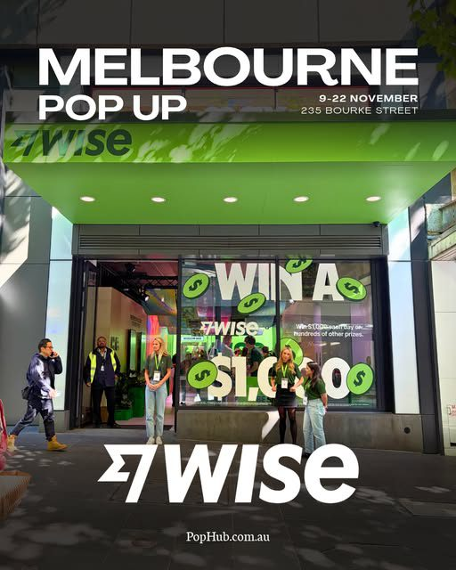

Retail pop-ups & activations
People counting for retail pop-ups and activations
Prove the reach of a short run. Measure how many people pass, stop and come in, how long they stay and where attention goes, so you can justify the spend and compare sites.

The challenge
Short runs are hard to prove.
A pop-up or activation exists to generate reach, trial and brand lift, but its temporary nature makes ROI hard to prove: there is no permanent sales baseline, and much of the value is awareness rather than immediate sales. Measurement is the single biggest barrier to experiential spend.
An objective footfall count is the denominator everything else is built on, cost per visitor, capture rate, conversion and cost per impression. That number is what justifies the next budget and proves the site was worth it.
What you can measure
The data you get from day one.
Footfall
Entries and exits, hourly and daily, across the run.
Capture rate
Passers-by versus those who actually come in.
Dwell time
How long visitors stay inside.
Zone attention
Which displays and features draw and hold people.
Daily performance
How each day of a short activation performs.
Occupancy
Live headcount for comfort and capacity in a small space.
Data-capture rate
Visitors who scan, sign up or opt in.
Site comparison
The same activation compared across locations and cities.
Ways to use it
How brands, agencies and landlords use the data.
Prove reach
Report total visitors and passers-by exposed, the impressions number that justifies the activation to finance and wins the next budget.
Separate weak site from weak creative
Use capture rate to tell whether few people passed, or many passed and few came in, so you change the location or the creative, not both.
Compare sites on a tour
Rank locations on a roadshow by footfall and capture rate to decide where to repeat and where to drop.
Price temporary space
As a landlord or space provider, use gangway traffic and capture rate to set and defend licence or rent for pop-up locations.
Test a permanent site
Use real foot traffic from a pop-up as evidence before committing to a permanent lease.
Staff the short lease
Match ambassadors and sampling staff to the hourly curve so a two or three day run is not over or under-staffed.
Business impact
Make more money, save money and improve experiences.
Make more money
- Prove reach and engagement to the brand, sponsors and the business.
- Unlock the next budget, since measurement is the top barrier to experiential spend.
- Compute cost per visitor and per impression to compare against paid media.
- As a landlord, price and defend temporary space on real traffic.
Save money
- Staff a short lease to the hours that matter, not dead periods.
- Kill weak locations with capture-rate data before signing the next lease.
- Put the hero feature where dwell and attention say traffic concentrates.
- Focus setup and stock where they pay off.
Improve experiences
- Manage queues and capacity in a small footprint.
- Open a second sampling point before the line deters people.
- Lay out the space and hero products where people look.
- Keep a small space from feeling overcrowded.
This is part of how we help marketing teams and exhibitions and pop-ups. See the sensors we use.
FAQ
Questions & answers
How quickly can a pop-up be set up to count?
Counters for temporary sites install quickly and can run on battery and mobile data, so a short activation is measured from day one with no cabling.
We have no fixed power. Is there a battery option?
Yes. Battery-powered counters need no power at the counting point and are ready shortly after install.
Can you measure passers-by, not just entries?
Yes, where the sensor’s field of view covers the gangway as well as the entrance. That gives a capture rate, the share of passers-by who come in. Entrance geometry matters, so we plan it with you.
Can we link it to sign-ups and sales?
Yes. Footfall can be tied to opt-ins, QR scans and, where available, sales, so you show the activation drove buyers, not just lookers.
Is it anonymous?
Yes. Visitors are counted anonymously, with no images or personal information captured.
See your places in a new light.
Book a 30-minute walkthrough and we'll scope a pilot for one of your sites: sensors, installation, software and insights in one agreement.